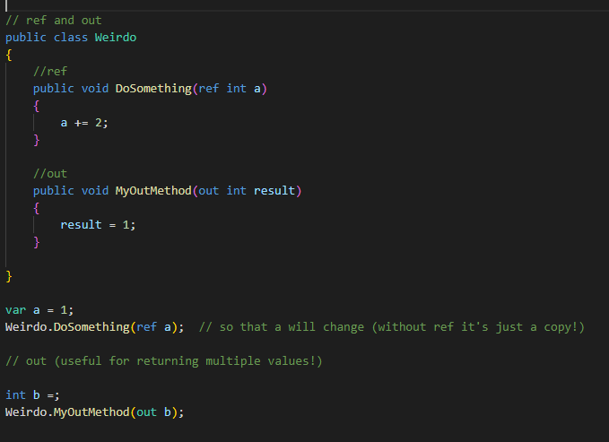
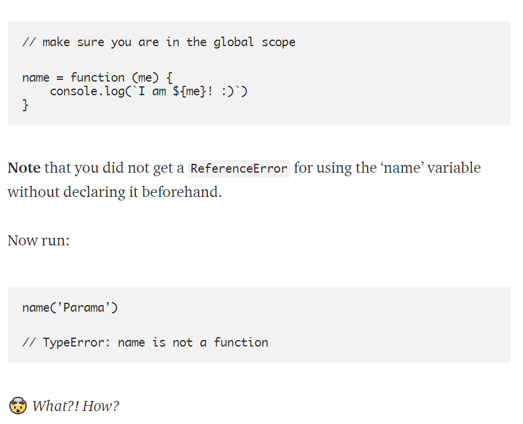
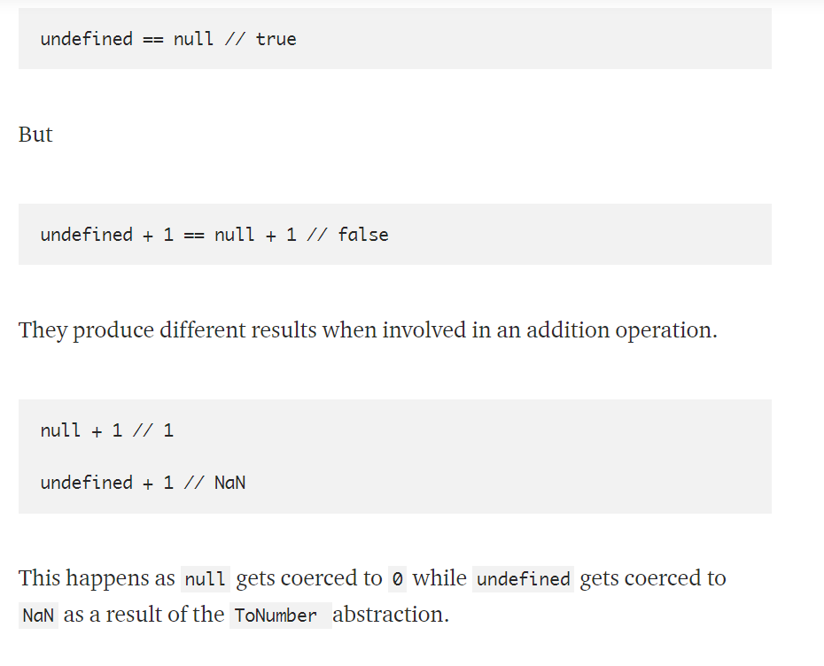
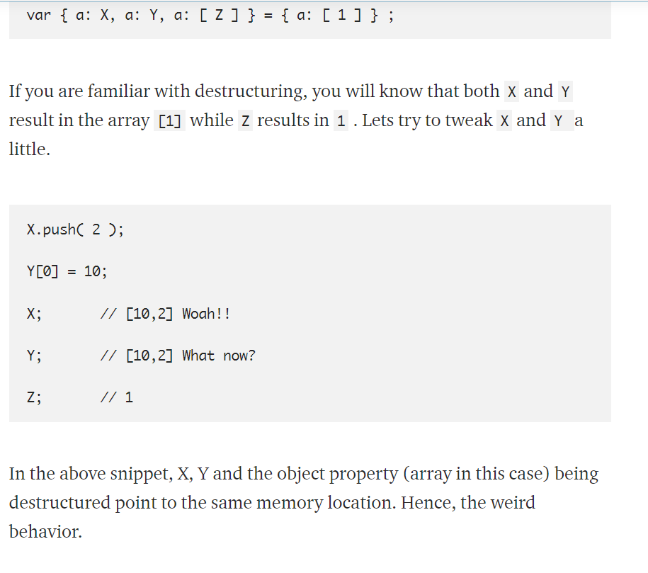

ref and out
ref can be considered code smell
readonly
decorate readonly when something should be instantiated only-once
protected
ONLY accesible from its class and derived classes
AVOID if can (use private instead)
internal = only accessible from the same assembly (same Program)
protected internal - accesible from the same Assembly or Derived class
BASE class constructors Always executed first (NOT inherited...need to ReDefine)
Upcasting (derived-class to BASE class)
Downcasting (BASE to derived)
composition
Allows one class to contain another (Car has an Engine)
looser coupling than Inheritance (Tightly Coupled application = BAD)
Any Inheritance can be built to Composition instead
User Secrets
stored in JSON config-file
dotnet user-secrets set ''
stored in AppData/Microsoft/UserSecrets
Right-click project "Manage User Secrets"
- Add "Microsoft.Extensions.SecretManager.Tools" in .csproj
- Right click "Manage user Secrets"
- in startup.cs file...Env.IsDeployment()...App.AddUserSecrets startup
- cmd-line way: dotnet user-secrets set ' ' Namespace
For Console Apps
in .csproj:
Threading
Run computation-intensive code on a different thread than the U.I. thread
Context Switching
Thread thread = new Thread(spawning thread)
main Thread always has the U.I.
Debug -> Windows -> Threads (Name your threads for debugging...thread.Name = " " )
Multi Threading
Managed by the Thread-Scheduler
CLR delegates it
Operating system takes care of it
Separate-copy of local-variables is created on each thread's memory-stack
static variable shared amongst threads
new Thread("methodName").Start()
when writing code with shared-resources have to think about Locking-Strategy
thread.Start();
thread.Join();
will wait for thread to finish
any subsequent thread will wait for it to finish
only way to share a value between threads is using thread.Join()
Tasks
Can-be chained
may use thread pool
Good for I/O bound operations
Task.Result() (will block program until finished
Continuation
Async-task that is invoked by another task called an antecedent
Pass data from antecedent to the continuation-task
Control how continuation is invoked
Able to cancel continuation
Multiple continuations from one antecedent
Locks
Exclusive-Lock (1 thread to access certain section of code)
Lock
Mutex
Non-Exclusive-locks
Semaphore
SemaphoreSlim
Semaphores are resource intensive
Limit amount of concurrent threads that can access a resource
Reader/Writer
Allow multiple-threads to access a resource
Incrementing a class Automatically
fine in single-threaded environment
Race-conditions can happen
static int _refid
public REFID {get; set; }
Interlocked.Increment(ref refid)
name or window.name is a reserved keyword. When name is set to any value, it is automatically stringified, i.e, the toString() method is called on it . window.name gets/sets the name of the window. This only happens for var declarations and not for let declarations since let variables do not attach themselves to the window object.
undefined and null, same but different
undefined and null coerce to each other when compared with ==
caveat to destructuring

A monolithic architecture means that your app is written as one cohesive unit of code whose components are designed to work together, sharing the same memory space and resources.
A microservice architecture means that your app is made up of lots of smaller, independent applications capable of running in their own memory space and scaling independently from each other across potentially many separate machines.
- The major advantage of the monolithic architecture is that most apps typically have a large number of cross-cutting concerns, such as logging, rate limiting, and security features such audit trails and DOS protection. When everything is running through the same app, it’s easy to hook up components to those cross-cutting concerns.
- There can also be performance advantages, since shared-memory access is faster than inter-process communication (IPC).
Monolithic Pros:
- Monolithic app services tend to get tightly coupled and entangled as the application evolves, making it difficult to isolate services for purposes such as independent scaling or code maintainability.
- Monolithic architectures are also much harder to understand, because there may be dependencies, side-effects, and magic which are not obvious when you’re looking at a particular service or controller.
Monolithic Cons:
- Microservice architectures are typically better organized, since each microservice has a very specific job, and is not concerned with the jobs of other components.
- Decoupled services are also easier to recompose and reconfigure to serve the purposes of different apps (for example, serving both the web clients and public API).
- They can also have performance advantages depending on how they’re organized because it’s possible to isolate hot services and scale them independent of the rest of the app.
Microservice Pros:
- As you’re building a new microservice architecture, you’re likely to discover lots of cross-cutting concerns that you did not anticipate at design time. A monolithic app could establish shared magic helpers or middleware to handle such cross-cutting concerns without much effort.
- In a microservice architecture, you’ll either need to incur the overhead of separate modules for each cross-cutting concern, or encapsulate cross-cutting concerns in another service layer that all traffic gets routed through.
- Eventually, even monolthic architectures tend to route traffic through an outer service layer for cross-cutting concerns, but with a monolithic architecture, it’s possible to delay the cost of that work until the project is much more mature.
- Microservices are frequently deployed on their own virtual machines or containers, causing a proliferation of VM wrangling work. These tasks are frequently automated with container fleet management tools.
Microservice Cons:
Positive attitudes toward microservices, despite the higher initial cost vs monolthic apps. Aware that microservices tend to perform and scale better in the long run.
Structure the app so that services are independent from each other at the code level, but easy to bundle together as a monolithic app in the beginning. Microservice overhead costs can be delayed until it becomes more practical to pay the price.